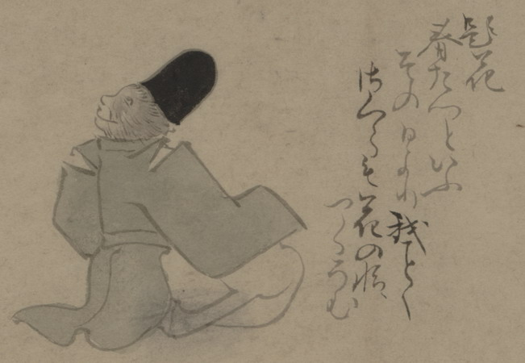

猿の化物。立烏帽子をかぶって、公家装束を身にまとい、座っている。詞書に「題花春たつといふその日より我ことくさくらも花の情けつくらむ」とある。
出典：親書誌：U426_nichibunken_0150：付喪神絵詞；ツクモガミエコトバ／日付：2010／資源識別子：U426_nichibunken_0150_0040_0000
Copyright (c)2010- International Research Center for Japanese Studies, Kyoto, Japan. All rights reserved.